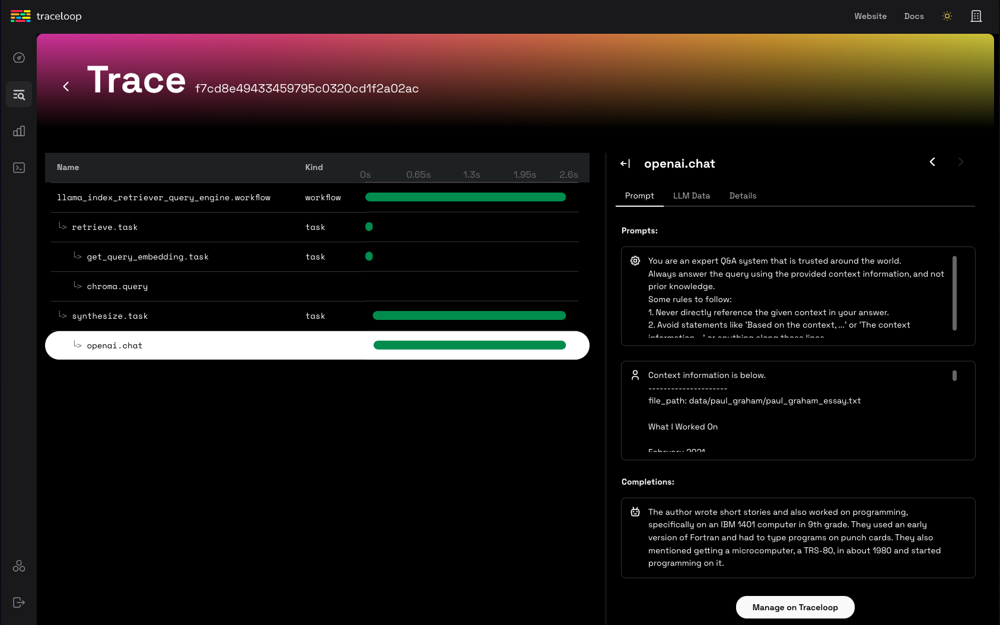

Observability#
LlamaIndex provides one-click observability 🔠to allow you to build principled LLM applications in a production setting.
A key requirement for principled development of LLM applications over your data (RAG systems, agents) is being able to observe, debug, and evaluate your system - both as a whole and for each component.
This feature allows you to seamlessly integrate the LlamaIndex library with powerful observability/evaluation tools offered by our partners. Configure a variable once, and you'll be able to do things like the following:
- View LLM/prompt inputs/outputs
- Ensure that the outputs of any component (LLMs, embeddings) are performing as expected
- View call traces for both indexing and querying
Each provider has similarities and differences. Take a look below for the full set of guides for each one!
NOTE:
Observability is now being handled via the instrumentation module (available in v0.10.20 and later.)
A lot of the tooling and integrations mentioned in this page use our legacy CallbackManager or don't use set_global_handler. We've marked these integrations as such!
Usage Pattern#
To toggle, you will generally just need to do the following:
from llama_index.core import set_global_handler
# general usage
set_global_handler("<handler_name>", **kwargs)
Note that all kwargs to set_global_handler are passed to the underlying callback handler.
And that's it! Executions will get seamlessly piped to downstream service and you'll be able to access features such as viewing execution traces of your application.
Partner One-Click Integrations#
LlamaTrace (Hosted Arize Phoenix)#
We've partnered with Arize on LlamaTrace, a hosted tracing, observability, and evaluation platform that works natively with LlamaIndex open-source users and has integrations with LlamaCloud.
This is built upon the open-source Arize Phoenix project. Phoenix provides a notebook-first experience for monitoring your models and LLM Applications by providing:
- LLM Traces - Trace through the execution of your LLM Application to understand the internals of your LLM Application and to troubleshoot problems related to things like retrieval and tool execution.
- LLM Evals - Leverage the power of large language models to evaluate your generative model or application's relevance, toxicity, and more.
Usage Pattern#
To install the integration package, do pip install -U llama-index-callbacks-arize-phoenix.
Then create an account on LlamaTrace: https://llamatrace.com/login. Create an API key and put it in the PHOENIX_API_KEY variable below.
Then run the following code:
# Phoenix can display in real time the traces automatically
# collected from your LlamaIndex application.
# Run all of your LlamaIndex applications as usual and traces
# will be collected and displayed in Phoenix.
# setup Arize Phoenix for logging/observability
import llama_index.core
import os
PHOENIX_API_KEY = "<PHOENIX_API_KEY>"
os.environ["OTEL_EXPORTER_OTLP_HEADERS"] = f"api_key={PHOENIX_API_KEY}"
llama_index.core.set_global_handler(
"arize_phoenix", endpoint="https://llamatrace.com/v1/traces"
)
...
Guides#

MLflow#
MLflow is an open-source MLOps/LLMOps platform, focuses on the full lifecycle for machine learning projects, ensuring that each phase is manageable, traceable, and reproducible. MLflow Tracing is an OpenTelemetry-based tracing capability and supports one-click instrumentation for LlamaIndex applications.
Usage Pattern#
Since MLflow is open-source, you can start using it without any account creation or API key setup. Jump straight into the code after installing the MLflow package!
import mlflow
mlflow.llama_index.autolog() # Enable mlflow tracing

Guides#
MLflow LlamaIndex integration also provides experiment tracking, evaluation, dependency management, and more. Check out the MLflow documentation for more details.
Support Table#
MLflow Tracing support the full range of LlamaIndex features. Some new features like AgentWorkflow requires MLflow >= 2.18.0.
| Streaming | Async | Engine | Agents | Workflow | AgentWorkflow |
|---|---|---|---|---|---|
| ✅ | ✅ | ✅ | ✅ | ✅ (>= 2.18) | ✅ (>= 2.18) |
OpenLLMetry#
OpenLLMetry is an open-source project based on OpenTelemetry for tracing and monitoring LLM applications. It connects to all major observability platforms and installs in minutes.
Usage Pattern#
from traceloop.sdk import Traceloop
Traceloop.init()
Guides#

Arize Phoenix (local)#
You can also choose to use a local instance of Phoenix through the open-source project.
In this case you don't need to create an account on LlamaTrace or set an API key for Phoenix. The phoenix server will launch locally.
Usage Pattern#
To install the integration package, do pip install -U llama-index-callbacks-arize-phoenix.
Then run the following code:
# Phoenix can display in real time the traces automatically
# collected from your LlamaIndex application.
# Run all of your LlamaIndex applications as usual and traces
# will be collected and displayed in Phoenix.
import phoenix as px
# Look for a URL in the output to open the App in a browser.
px.launch_app()
# The App is initially empty, but as you proceed with the steps below,
# traces will appear automatically as your LlamaIndex application runs.
import llama_index.core
llama_index.core.set_global_handler("arize_phoenix")
...
Example Guides#
Langfuse 🪢#
Langfuse is an open source LLM engineering platform to help teams collaboratively debug, analyze and iterate on their LLM Applications. With the Langfuse integration, you can track and monitor performance, traces, and metrics of your LlamaIndex application. Detailed traces of the context augmentation and the LLM querying processes are captured and can be inspected directly in the Langfuse UI.
Usage Pattern#
Make sure you have both llama-index and langfuse installed.
pip install llama-index langfuse
At the root of your LlamaIndex application, register Langfuse's LlamaIndexInstrumentor. When instantiating LlamaIndexInstrumentor, make sure to configure your Langfuse API keys and the Host URL correctly via environment variables or constructor arguments.
import os
# Get keys for your project from the project settings page: https://cloud.langfuse.com
os.environ["LANGFUSE_PUBLIC_KEY"] = "pk-lf-..."
os.environ["LANGFUSE_SECRET_KEY"] = "sk-lf-..."
os.environ["LANGFUSE_HOST"] = "https://cloud.langfuse.com" # 🇪🇺 EU region
# os.environ["LANGFUSE_HOST"] = "https://us.cloud.langfuse.com" # 🇺🇸 US region
from langfuse.llama_index import LlamaIndexInstrumentor
# Get your keys from the Langfuse project settings page and set them as environment variables
# or pass them as arguments when initializing the instrumentor
instrumentor = LlamaIndexInstrumentor()
# Automatically trace all LlamaIndex operations
instrumentor.start()
# ... your LlamaIndex index creation ...
index.as_query_engine().query("What is the capital of France?")
# Flush events to langfuse
instrumentor.flush()
You can now see the logs of your LlamaIndex application in Langfuse:
{kind=link}
Example trace link in Langfuse
Example Guides#
- Langfuse Documentation
- End-to-end example notebook
- Tracing LlamaIndex Agents
- Analyze and Debug LlamaIndex Applications with PostHog and Langfuse
Literal AI#
Literal AI is the go-to LLM evaluation and observability solution, enabling engineering and product teams to ship LLM applications reliably, faster and at scale. This is possible through a collaborative development cycle involving prompt engineering, LLM observability, LLM evaluation and LLM monitoring. Conversation Threads and Agent Runs can be automatically logged on Literal AI.
The simplest way to get started and try out Literal AI is to signup on our cloud instance. You can then navigate to Settings, grab your API key, and start logging!
Usage Pattern#
- Install the Literal AI Python SDK with
pip install literalai - On your Literal AI project, go to Settings and grab your API key
- If you are using a self-hosted instance of Literal AI, also make note of its base URL
Then add the following lines to your applicative code :
from llama_index.core import set_global_handler
# You should provide your Literal AI API key and base url using the following environment variables:
# LITERAL_API_KEY, LITERAL_API_URL
set_global_handler("literalai")
Example Guides#
- Literal AI integration with Llama Index
- Build a Q&A application with LLamaIndex and monitor it with Literal AI
Comet Opik#
Opik is an open-source end to end LLM Evaluation Platform built by Comet.
To get started, simply sign up for an account on Comet and grab your API key.
Usage Pattern#
- Install the Opik Python SDK with
pip install opik - In Opik, get your API key from the user menu.
- If you are using a self-hosted instance of Opik, also make note of its base URL.
You can configure Opik using the environment variables OPIK_API_KEY, OPIK_WORKSPACE and OPIK_URL_OVERRIDE if you are using a self-hosted instance. You can set these by calling:
export OPIK_API_KEY="<OPIK_API_KEY>"
export OPIK_WORKSPACE="<OPIK_WORKSPACE - Often the same as your API key>"
# Optional
#export OPIK_URL_OVERRIDE="<OPIK_URL_OVERRIDE>"
You can now use the Opik integration with LlamaIndex by setting the global handler:
from llama_index.core import Document, VectorStoreIndex, set_global_handler
# You should provide your OPIK API key and Workspace using the following environment variables:
# OPIK_API_KEY, OPIK_WORKSPACE
set_global_handler(
"opik",
)
# This example uses OpenAI by default so don't forget to set an OPENAI_API_KEY
index = VectorStoreIndex.from_documents([Document.example()])
query_engine = index.as_query_engine()
questions = [
"Tell me about LLMs",
"How do you fine-tune a neural network ?",
"What is RAG ?",
]
for question in questions:
print(f"> \033[92m{question}\033[0m")
response = query_engine.query(question)
print(response)
You will see the following traces in Opik:
Example Guides#
Argilla#
Argilla is a collaboration tool for AI engineers and domain experts who need to build high-quality datasets for their projects.
To get started, you need to deploy the Argilla server. If you have not done so, you can easily deploy it following this guide.
Usage Pattern#
- Install the Argilla LlamaIndex integration package with
pip install argilla-llama-index - Initialize the ArgillaHandler. The
<api_key>is in theMy Settingspage of your Argilla Space but make sure you are logged in with theowneraccount you used to create the Space. The<api_url>is the URL shown in your browser. - Add the ArgillaHandler to the dispatcher.
from llama_index.core.instrumentation import get_dispatcher
from argilla_llama_index import ArgillaHandler
argilla_handler = ArgillaHandler(
dataset_name="query_llama_index",
api_url="http://localhost:6900",
api_key="argilla.apikey",
number_of_retrievals=2,
)
root_dispatcher = get_dispatcher()
root_dispatcher.add_span_handler(argilla_handler)
root_dispatcher.add_event_handler(argilla_handler)
Example Guides#

Other Partner One-Click Integrations (Legacy Modules)#
These partner integrations use our legacy CallbackManager or third-party calls.
Langfuse#
This integration is deprecated. We recommend using the new instrumentation-based integration with Langfuse as described here.
Usage Pattern#
from llama_index.core import set_global_handler
# Make sure you've installed the 'llama-index-callbacks-langfuse' integration package.
# NOTE: Set your environment variables 'LANGFUSE_SECRET_KEY', 'LANGFUSE_PUBLIC_KEY' and 'LANGFUSE_HOST'
# as shown in your langfuse.com project settings.
set_global_handler("langfuse")
Guides#

DeepEval#
DeepEval (by Confident AI) is an open-source evaluation framework for LLM applications. As you "unit test" your LLM app using DeepEval's 14+ default metrics it currently offers (summarization, hallucination, answer relevancy, faithfulness, RAGAS, etc.), you can debug failing test cases through this tracing integration with LlamaIndex, or debug unsatisfactory evaluations in production through DeepEval's hosted evaluation platform, Confident AI, that runs referenceless evaluations in production.
Usage Pattern#
from llama_index.core import set_global_handler
set_global_handler("deepeval")
# NOTE: Run 'deepeval login' in the CLI to log traces on Confident AI, DeepEval's hosted evaluation platform.
# Run all of your LlamaIndex applications as usual and traces
# will be collected and displayed on Confident AI whenever evaluations are ran.
...

Weights and Biases Prompts#
Prompts allows users to log/trace/inspect the execution flow of LlamaIndex during index construction and querying. It also allows users to version-control their indices.
Usage Pattern#
from llama_index.core import set_global_handler
set_global_handler("wandb", run_args={"project": "llamaindex"})
# NOTE: No need to do the following
from llama_index.callbacks.wandb import WandbCallbackHandler
from llama_index.core.callbacks import CallbackManager
from llama_index.core import Settings
# wandb_callback = WandbCallbackHandler(run_args={"project": "llamaindex"})
# Settings.callback_manager = CallbackManager([wandb_callback])
# access additional methods on handler to persist index + load index
import llama_index.core
# persist index
llama_index.core.global_handler.persist_index(graph, index_name="my_index")
# load storage context
storage_context = llama_index.core.global_handler.load_storage_context(
artifact_url="ayut/llamaindex/my_index:v0"
)

Guides#
OpenInference#
OpenInference is an open standard for capturing and storing AI model inferences. It enables experimentation, visualization, and evaluation of LLM applications using LLM observability solutions such as Phoenix.
Usage Pattern#
import llama_index.core
llama_index.core.set_global_handler("openinference")
# NOTE: No need to do the following
from llama_index.callbacks.openinference import OpenInferenceCallbackHandler
from llama_index.core.callbacks import CallbackManager
from llama_index.core import Settings
# callback_handler = OpenInferenceCallbackHandler()
# Settings.callback_manager = CallbackManager([callback_handler])
# Run your LlamaIndex application here...
for query in queries:
query_engine.query(query)
# View your LLM app data as a dataframe in OpenInference format.
from llama_index.core.callbacks.open_inference_callback import as_dataframe
query_data_buffer = llama_index.core.global_handler.flush_query_data_buffer()
query_dataframe = as_dataframe(query_data_buffer)
NOTE: To unlock capabilities of Phoenix, you will need to define additional steps to feed in query/ context dataframes. See below!
Guides#
TruEra TruLens#
TruLens allows users to instrument/evaluate LlamaIndex applications, through features such as feedback functions and tracing.
Usage Pattern + Guides#
# use trulens
from trulens_eval import TruLlama
tru_query_engine = TruLlama(query_engine)
# query
tru_query_engine.query("What did the author do growing up?")

Guides#
HoneyHive#
HoneyHive allows users to trace the execution flow of any LLM workflow. Users can then debug and analyze their traces, or customize feedback on specific trace events to create evaluation or fine-tuning datasets from production.
Usage Pattern#
from llama_index.core import set_global_handler
set_global_handler(
"honeyhive",
project="My HoneyHive Project",
name="My LLM Workflow Name",
api_key="MY HONEYHIVE API KEY",
)
# NOTE: No need to do the following
from llama_index.core.callbacks import CallbackManager
# from honeyhive.utils.llamaindex_tracer import HoneyHiveLlamaIndexTracer
from llama_index.core import Settings
# hh_tracer = HoneyHiveLlamaIndexTracer(
# project="My HoneyHive Project",
# name="My LLM Workflow Name",
# api_key="MY HONEYHIVE API KEY",
# )
# Settings.callback_manager = CallbackManager([hh_tracer])
 Use Perfetto to debug and analyze your HoneyHive traces
Use Perfetto to debug and analyze your HoneyHive traces
Guides#
PromptLayer#
PromptLayer allows you to track analytics across LLM calls, tagging, analyzing, and evaluating prompts for various use-cases. Use it with LlamaIndex to track the performance of your RAG prompts and more.
Usage Pattern#
import os
os.environ["PROMPTLAYER_API_KEY"] = "pl_7db888a22d8171fb58aab3738aa525a7"
from llama_index.core import set_global_handler
# pl_tags are optional, to help you organize your prompts and apps
set_global_handler("promptlayer", pl_tags=["paul graham", "essay"])
Guides#
Langtrace#
Langtrace is a robust open-source tool that supports OpenTelemetry and is designed to trace, evaluate, and manage LLM applications seamlessly. Langtrace integrates directly with LlamaIndex, offering detailed, real-time insights into performance metrics such as accuracy, evaluations, and latency.
Install#
pip install langtrace-python-sdk
Usage Pattern#
from langtrace_python_sdk import (
langtrace,
) # Must precede any llm module imports
langtrace.init(api_key="<LANGTRACE_API_KEY>")
Guides#
OpenLIT#
OpenLIT is an OpenTelemetry-native GenAI and LLM Application Observability tool. It's designed to make the integration process of observability into GenAI projects with just a single line of code. OpenLIT provides OpenTelemetry Auto instrumentation for various LLMs, VectorDBs and Frameworks like LlamaIndex. OpenLIT provides insights into your LLM Applications performance, tracing of requests, over view metrics on usage like costs, tokens and a lot more.
Install#
pip install openlit
Usage Pattern#
import openlit
openlit.init()
Guides#
AgentOps#
AgentOps helps developers build, evaluate, and monitor AI agents. AgentOps will help build agents from prototype to production, enabling agent monitoring, LLM cost tracking, benchmarking, and more.
Install#
pip install llama-index-instrumentation-agentops
Usage Pattern#
from llama_index.core import set_global_handler
# NOTE: Feel free to set your AgentOps environment variables (e.g., 'AGENTOPS_API_KEY')
# as outlined in the AgentOps documentation, or pass the equivalent keyword arguments
# anticipated by AgentOps' AOClient as **eval_params in set_global_handler.
set_global_handler("agentops")
Simple (LLM Inputs/Outputs)#
This simple observability tool prints every LLM input/output pair to the terminal. Most useful for when you need to quickly enable debug logging on your LLM application.
Usage Pattern#
import llama_index.core
llama_index.core.set_global_handler("simple")